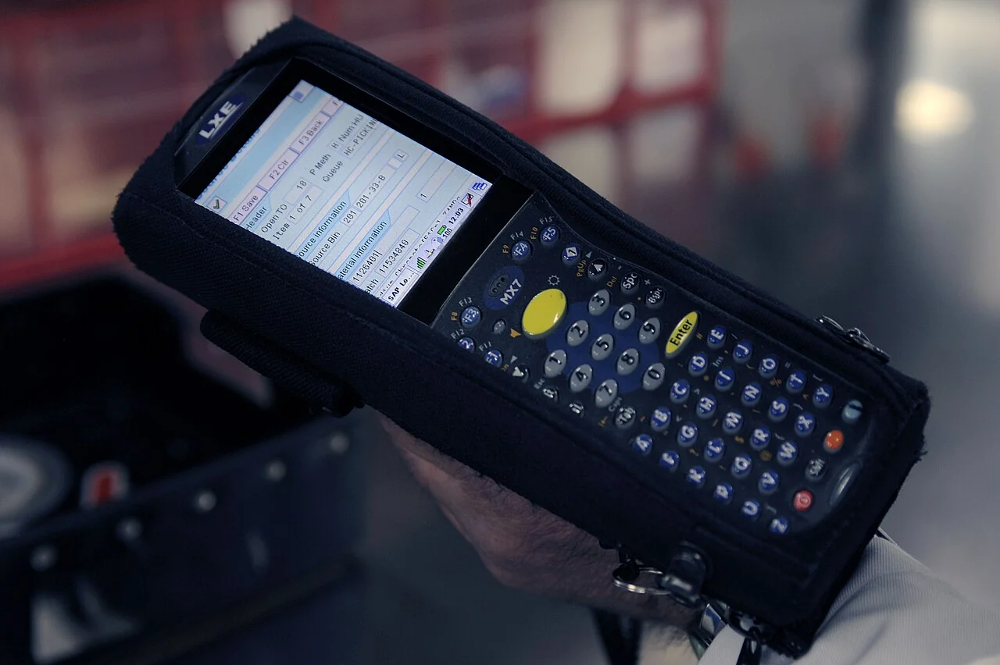
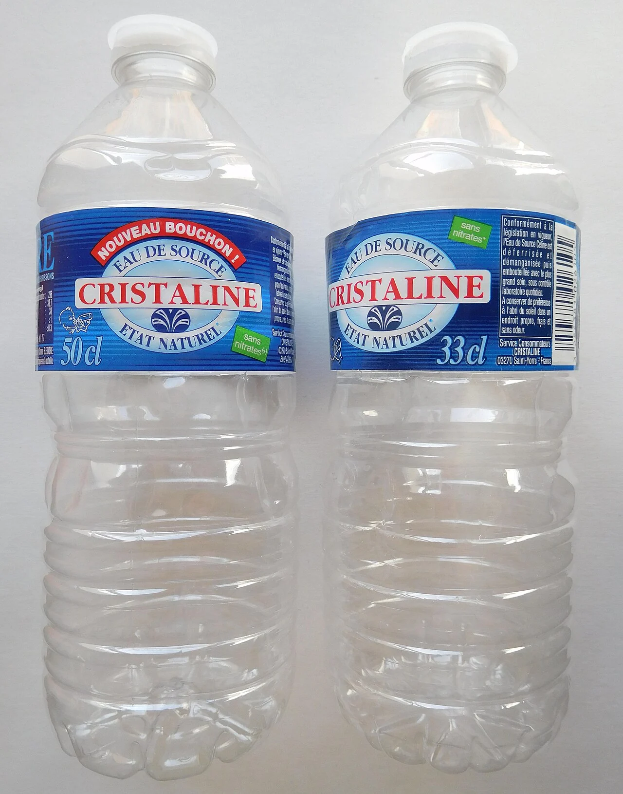
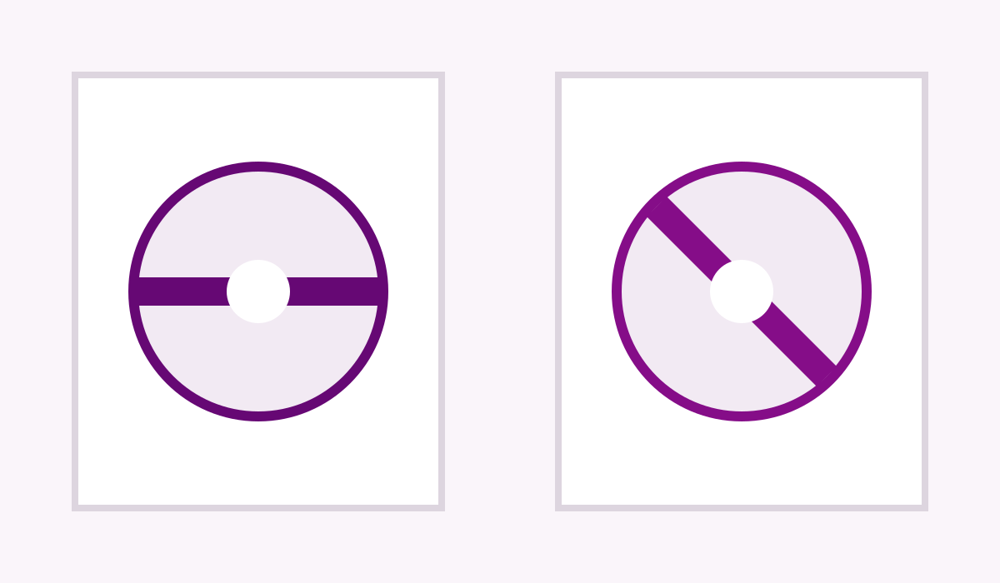
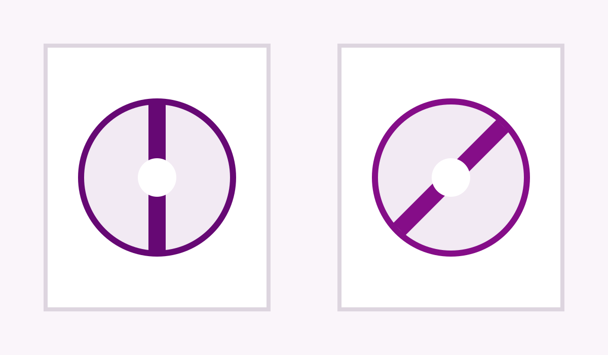
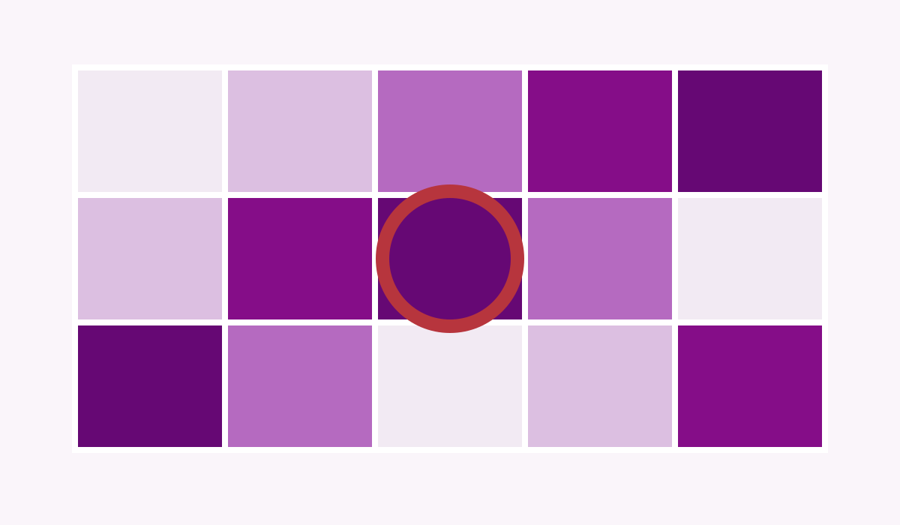
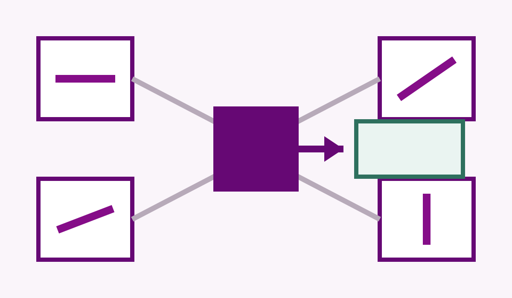
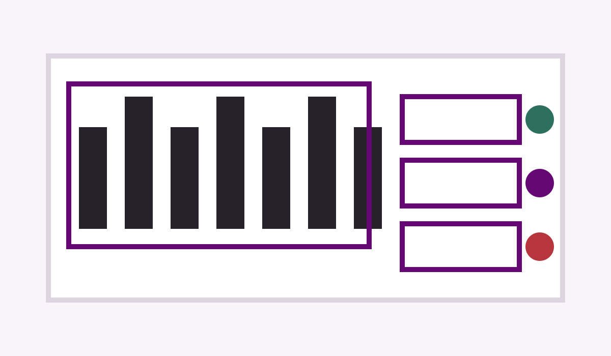

工业需求与共同故障
Demand & Failure
从固定工位识读失效出发，以单相机、单次曝光和无机械切换扩大可靠工作区间
先证明固定工位为什么失效，再说明偏振相机为何是合适手段。
Demand & Failure
Practice & Gap
Question & Physics
System & Method
Experiments & Gates
Contribution & Plan



固定机位视觉系统真正关心的不是图像“更好看”，而是在生产节拍内完整、稳定、可置信地读出字符串。
批次、日期和序列号必须与产品绑定。
条码与字符决定物流路径和库存记录。
OCR 与 OCV 分别负责读取和格式/内容验证。
采集、处理和拒绝策略必须满足产线速度。




材质、覆膜、姿态和光源变化会移动高光位置，导致字符笔画在时间和空间上不稳定地消失。
光电响应截断后，笔画信息无法由软件恢复。
字符与背景的灰度差随姿态和入射角变化。
同一帧不同字符区域可能偏好不同检偏方向。
稳定但错误的字符串比明确拒绝风险更高。
最优偏振方向可能随材质、姿态和局部区域变化，但工业方案通常在安装时固定。
SHDocs、HAFNet、DocHR14K 已研究文本高光恢复，但多数以图像质量为主，工业 exact-read、误读和节拍仍需独立评价。
Polarized RR、TIP 分离和 PolarFree 证明偏振有价值，但对象、算力和评价与固定喷码工位不同。
One Shot → Adaptive Read
单相机、单次曝光、无电机切换。
固定 OCR 比较四方向、train-best 与 oracle
全局虚拟角度优先，证据支持后再局部融合
质量回退、跨条件、动态节拍与外部验证
线偏振分析器的理想强度模型。
DoFP 在一次曝光中空间复用四个分析方向。
按帧选择全局虚拟角；必要时再扩展为空间权重。
四方向采样位于相邻子像元，字符高频边缘可能受空间错位与去马赛克影响，必须单独消融。[11]
先确定最小字符像素、视场、工作距离和节拍，再采购相机与镜头。
| 采集 | 单相机 / 单曝光 / RAW |
| 主对象 | 工业喷码字符 |
| 照明 | 非偏振与固定入射偏振均测试 |
| 姿态 | yaw / pitch / roll 可重复 |
| 触发 | 静态先行，后扩展光电/编码器 |
| 参考 | 交叉偏振、HDR、旋转检偏片上界 |
主划分按 print/object、材质、SKU/批次和日期分组；相邻帧不得随机跨 train/test。





未通过前一 Gate，不启动后续复杂方法。
清晰 OCR 上限、标定、固定方向必要性、笔画互补与入射偏振。
全局/局部自适应、质量回退和跨材质/光照/SKU 泛化。
去马赛克、OCR 后端、动态节拍、重复性成本与外部场景。
同一轮消融固定 OCR、ROI、曝光协议、标定和 split。
材质 / 光照 / SKU / 日期。
相邻帧不作为独立样本。
纯 OCR 与 OCV 后处理分开。
完整采集时间，不只网络推理。
| 条件组 | I₀ | I₄₅ | I₉₀ | I₁₃₅ | Train-best | Oracle |
|---|---|---|---|---|---|---|
| 金属 × 姿态 | 测量 | 测量 | 测量 | 测量 | 训练集选择 | 事后上界 |
| 塑料 × 光照 | 测量 | 测量 | 测量 | 测量 | 训练集选择 | 事后上界 |
| 覆膜 × 褶皱 | 测量 | 测量 | 测量 | 测量 | 训练集选择 | 事后上界 |
若 Δadapt 接近 0，复杂自适应缺少研究必要性。
必须排除曝光不公平和去马赛克锐度差异。
固定交叉偏振已足够稳定时，转向光学配置优化。
| 类别 | 代表方法 | 曝光次数 | 可部署 | 对照作用 |
|---|---|---|---|---|
| 固定输入 | RGB / S₀ / 四方向 | 1 | 是 | 基础性能 |
| 最强固定 | Train-best / 交叉偏振 | 1 | 是 | 必须超过 |
| 简单融合 | min / median / concat | 1 | 是 | 排除普通融合收益 |
| 候选方法 | 全局角度 / soft weights / quality fallback | 1 | 是 | 课题核心 |
| 上界 | Per-image oracle / 密集角度扫描 | 1 / 多帧 | 否 | 估计可提升空间 |
| 工业强基线 | HDR / 多光源序列 | 多帧 | 条件性 | 性能—节拍权衡 |
所有实验均以字符串 ground truth 和固定 OCR 为起点。
清晰上限、exact/CER、笔画互补、第二 OCR 后端和 OCV 分离。
虚拟角验证、入射偏振、去马赛克、全局/局部表示和质量回退。
动态触发、运动模糊、全链路节拍、跨日期拆装、BOM 与维护。
结果页最终按四类证据组织，而不是堆叠单一平均准确率。
Train-best vs oracle。
饱和、边缘与字符错误位置。
材质/光照/SKU/date + risk-coverage。
速度、延迟、重复性和 Pareto。
量化固定偏振配置在变化反射下的工作边界和自适应空间。
优先全局虚拟角度/权重，证据支持后再扩展局部表示。
质量回退、选择性拒绝、DoFP 标定、动态节拍、重复性和成本。
课题目标是扩大可靠工作区间，不是完全消除反射。
不能恢复已截断笔画，只能调曝光/照明或拒绝。
停止复杂融合，转向固定光学配置或收窄对象。
逆反射与红外机理不同，只做独立挑战性外测。[4]
先证明固定方向确实不足，再研究单曝光自适应偏振表示